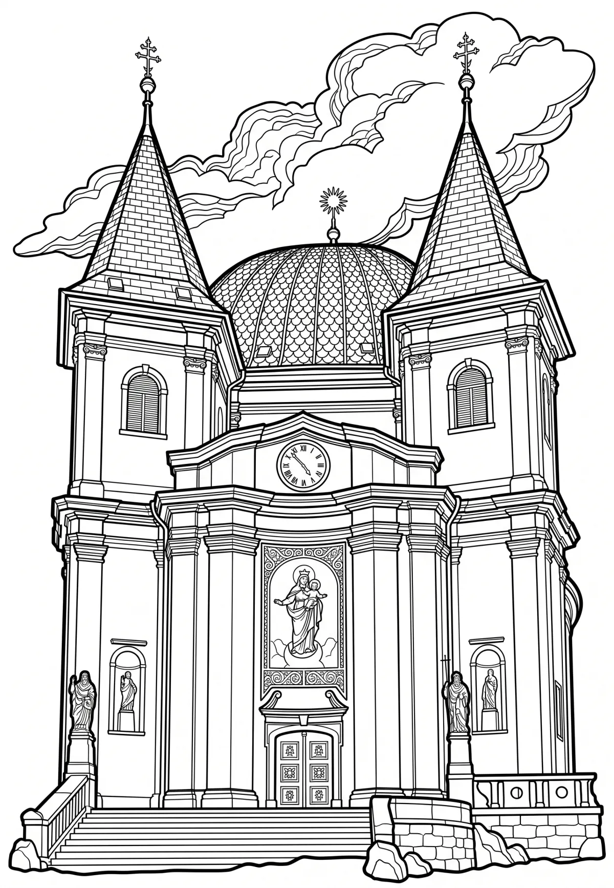

Svatý Hostýn
Bazilika Nanebevzetí Panny Marie je poutní kostel s titulem basilica minor stojící na vrchu Svatém Hostýně. Jde o jeden z nejvýznamnějších mariánských poutních kostelů na Moravě, ke kterým patří také Velehrad nebo v Čechách Svatá Hora u Příbrami.
Více na Wikipedii